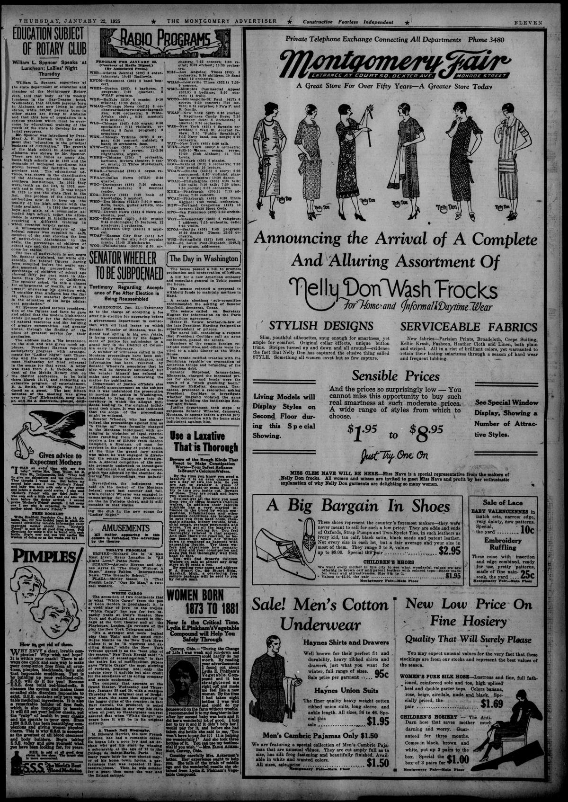

The Day in Washington
https://www.loc.gov/resource/sn84020645/1925-01-22/ed-1/?sp=10

See the original pageVer la página original
The house passed a bill to promote production and conservation of helium.
A bill for a new American embassy and consulate general in Tokio passed the house.
The senate rejected a proposal to withhold funds to maintain marines in Haiti.
A senate elections sub-committee recommended the seating of Senator Mayfield, democrat, Texas.
The senate called on Secretary Hughes for information on the Paris reparations agreement.
Heber H. Votaw, brother-in-law of the late President Harding resigned as superintendent of prisons.
The naval bill, containing a request that President Coolidge call an arms conference, passed the senate.
Members of the senate foreign relations committee and others were invited to a night dinner at the White House.
The senate ratified treaties with the Dominican republic on evacuation of American troops and refunding of the Dominican debt.
Senator Shipstead, farmer-labor, Minnesota, charged the increased prices for stocks and bonds were the result of a “stock gambling boom.”
Senator McKellar, democrat, Tennessee, presented a resolution asking President Coolidge to investigate whether England violated the arms treaty in building the battleships Rodney and Nelson.
Justice department took steps to subpoena Senator Wheeler, democrat, Montana, to appear before a grand jury here in connection with the home state indictment against him.
How to cite this articleCómo citar este artículo
The Montgomery Advertiser. (1925). Montgomery, Ala., January 22, 192522 de enero de 1925. DR in the American PressRD en la Prensa Norteamericana. Library of Congress, Chronicling America: https://www.loc.gov/resource/sn84020645/1925-01-22/ed-1/?sp=10
ReferencesReferencias
Library of Congress, Chronicling America: The Montgomery Advertiser, January 22, 192522 de enero de 1925.
Send an observationEnviar una observación
Does this article connect with your family, your town, or something you know? Did we get something wrong? Write to us. Observations go to the editor's inbox and are read by a person.¿Este artículo conecta con su familia, su pueblo o algo que usted conoce? ¿Nos equivocamos en algo? Escríbanos. Las observaciones llegan al buzón del editor y las lee una persona.
Send observationEnviar observación